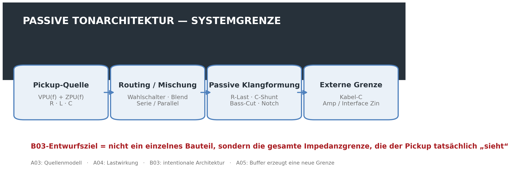
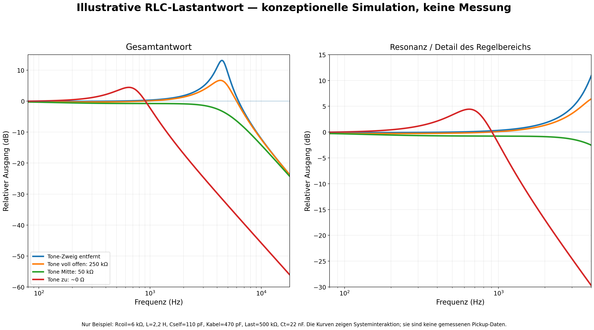
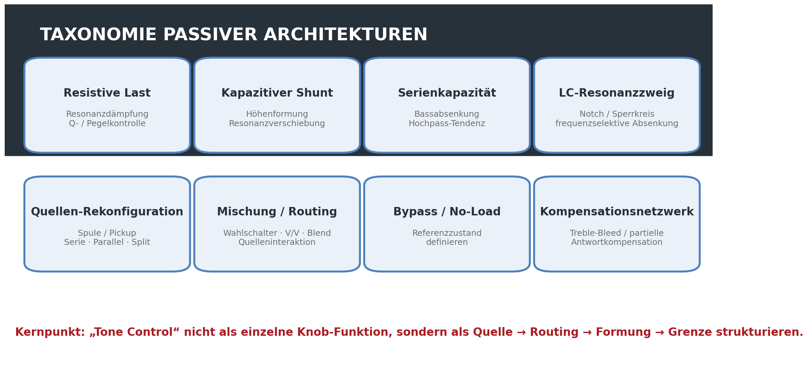
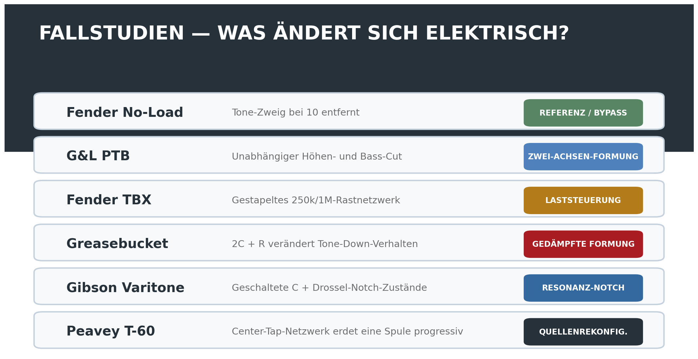
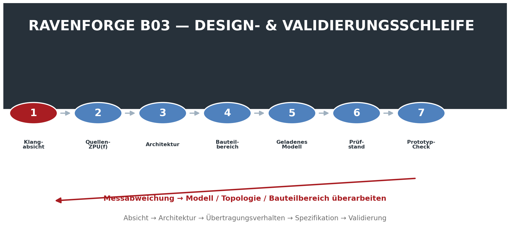

RAVENFORGE / DESIGN METHODOLOGY RESEARCH LOG — B03
RAVENFORGE
Design Methodology Research Log
B03 — Passive Tonal Architecture
Ein passives Klangsystem als Loading · Filtering · Routing · Reference State statt als Rezept aus Bauteilwerten entwerfen
Dokumentzweck |
Code | B03 |
|---|---|
Focus | passive tonal architecture · controlled loading · filtering · source reconfiguration · routing · reference state |
Evidence | JAES-Pickup-Modellierung · Schaltungstheorie · Hersteller-Serviceunterlagen · Patent / historische Implementierung |
RavenForge link | B02 sonic intent → passive architecture → measurable response → component specification |
Upstream logs | B02 · A03 · A04 · A05 |
Downstream logs | C02 (experiment pending) · A06 · B06 · A08/C05 · A09/C06 |
Status | Literatur-/Technikverifikation abgeschlossen · Architekturrahmen etabliert · Prototypmessung ausstehend |

Abbildung 1. B03-Systemgrenze. Gegenstand des passiven Schaltungsentwurfs ist nicht ein einzelner Tone-Kondensator, sondern das gesamte belastete System von der Pickup-Quelle bis zum externen Eingang.
1. Forschungsfrage — Warum ist passive Elektronik eher ein Architekturproblem als eine Wahl einzelner Bauteilwerte?
Passive Instrumentenschaltungen werden häufig auf Entscheidungen wie „250 kΩ oder 500 kΩ“ und „0,022 µF oder 0,047 µF“ reduziert. Ein magnetischer Pickup ist jedoch keine Spannungsquelle mit Nullimpedanz. Er ist eine frequenzabhängige Quelle mit R, L und Wicklungs-/Eigenkapazität, während externe Potentiometer, Kondensatoren, Kabel und Verstärkereingang Resonanz und Dämpfung gemeinsam verändern.
Daher kann derselbe Kondensator nicht dieselbe Antwort garantieren, wenn Pickup-Induktivität, Spulenwiderstand, Eigenkapazität, Reglerstellung, Kabelkapazität oder nachfolgende Eingangsimpedanz variieren. B03 fragt nicht „welches Bauteil ist besser?“, sondern „welche Impedanzgrenze soll der Pickup sehen, damit die beabsichtigte musikalische Funktion entsteht?“
B03 Core Position |
2. Grenze zwischen A03–A05 und B03 — Von der Beschreibung des Effekts zur Gestaltung der Struktur
Log | Kernfrage | Beziehung zu B03 |
|---|---|---|
A03 | Was ist das eigene RLC / ZPU(f) des Pickups? | Quellenmodell |
A04 | Wie verändert externe R/C-Last die Antwort? | Loading-Mechanismus |
A05 | Wie trennt ein Buffer Quelle und Folgelast? | neue elektrische Grenze |
B03 | Wie sollen Last und Routing intentional angeordnet werden? | Designarchitektur |
Während A04 die Folgen von Loading beschreibt, verwendet B03 Loading als Entwurfsvariable. Conventional Tone, No-Load, Bass-Cut, Notch, Pickup-Serie/Parallel, Blend und Quellen-Rekonfiguration werden deshalb nicht als voneinander unabhängige Bauteilkombinationen, sondern als verschiedene elektrische Operationen klassifiziert.
3. Grundmodell der Schaltung — Ein einfaches RC-Cutoff-Modell reicht nicht aus
In einer Näherung erster Ordnung lässt sich der Pickup als Quellenspannung VPU(f) und frequenzabhängige Quellenimpedanz ZPU(f) darstellen. Wird das externe Netzwerk als ZLOAD(f) beschrieben, folgt der Ausgang näherungsweise einer Spannungsteilerbeziehung der folgenden Form.
First-order loaded-source relation |
Da ZPU(f) selbst durch Spulenwiderstand, Induktivität und Eigen-/verteilte Kapazität geprägt wird, kann ein konventioneller Tone-Kondensator nicht als isolierter RC-Tiefpass erster Ordnung behandelt werden. Tone-Zweig, Kabelkapazität, Volume-Potentiometer und Eingangswiderstand verändern gleichzeitig Resonanzfrequenz und Dämpfung des Pickups. Auch das JAES-Modell von Paiva, Pakarinen und Välimäki behandelt lineare Resonanzfilterung und das Mischen mehrerer Pickups als Kernelemente des Verhaltens magnetischer Pickups [1].
Ein vereinfachter Tone-Zweig ist ein frequenzabhängiger Shunt nach Masse, bestehend aus Kondensator und Tone-Widerstand in Serie. Sinkt der Tone-Widerstand, wird der Kondensator stärker an die Quelle gekoppelt und im Zusammenspiel mit der Pickup-Induktivität kann eine neue Resonanz bei tieferer Frequenz entstehen. Eine universelle Regel, nach der das Herunterdrehen des Tone-Reglers Q zwingend erhöht oder verringert, gilt jedoch nicht. Q und Peakhöhe hängen von der gesamten Dämpfungsbedingung ab.

Abbildung 2. Beispielantwort eines vereinfachten RLC-Modells. Dies ist eine konzeptionelle Simulation und keine gemessene Pickup-Antwort; sie zeigt, warum sich die Wirkung eines Tone-Kondensators nicht durch einen einzigen unabhängigen RC-Cutoff darstellen lässt.
4. Passive Tonal Architecture — Grundlegende Topologie-Taxonomie

Abbildung 3. B03-Topologie-Taxonomie. Kompensationsnetzwerke wie Treble-Bleed gehören zur Klangarchitektur; die Aussage, sie „bewahrten“ den ursprünglichen Quellklang, erfordert jedoch einen definierten Referenzzustand und festgelegte Validierungsbedingungen.
Die vertiefte Untersuchung zeigt, dass eine zusätzliche Kategorie sinnvoll ist. Ein Treble-Bleed- oder Teilkompensationsnetzwerk, das Hochtonverlust bei reduzierter Lautstärke kompensiert, ist eine wichtige Form der Source-Loading-Architektur und wird deshalb separat als „Kompensationsnetzwerk“ geführt. Umgekehrt wird nicht jede Schaltfunktion als Tone-Schaltung eingeordnet; B03 umfasst Switching nur dann, wenn dadurch tatsächlich Quellenimpedanz oder Filterung verändert werden.
5. Conventional Volume/Tone — Mehr als ein „Höhenregler“
Ein konventioneller Tone-Regler ergänzt am Pickup-Ausgang einen Shunt-Pfad aus Kondensator und variablem Widerstand. Wird der Regler zurückgenommen, koppelt der Kondensator direkter nach Masse und Hochtonenergie wird reduziert. Da der Pickup jedoch eine induktive Quelle ist, entsteht kein isolierter Tiefpass erster Ordnung, sondern ein Resonanznetzwerk aus Pickup-RLC und externer C/R-Last.
Praxisregeln wie „0,022 µF = Humbucker“ und „0,047 µF = Single Coil“ können Ausgangspunkte sein, sind aber keine Entwurfsgesetze. In B03 wird der Kondensatorwert zusammen mit ZPU(f), Lastwiderstand, Kabelkapazität und gewünschter Endpunktantwort spezifiziert.
B03 Design Rule 01 |
6. Referenzzustand — Full-Up-Tone und echter Bypass sind nicht derselbe Zustand
Auch in Maximalstellung eines konventionellen Tone-Potis können endlicher Widerstand und Kondensatorzweig im Stromkreis verbleiben. Fenders 250K No-Load-Potentiometer dokumentiert diesen Unterschied ausdrücklich: Laut Fender arbeitet es von 1–9 wie ein normaler Tone-Regler; bei 10 wird der Tone-Regler aus dem Stromkreis entfernt [2].
B03 definiert den „Referenzzustand“ deshalb nicht nur anhand der Knopfmarkierung. Der tatsächliche Verbindungszustand muss dokumentiert werden: Standard-Tone voll offen, No-Load-Rastpunkt, Schalter-Bypass, Varitone Position 1 usw.
B03 Design Rule 02 |
7. Passive Bassabsenkung — Eine zweite Achse am Beispiel G&L PTB
Ein passives Netzwerk muss nicht nur Höhen reduzieren. G&L bezeichnet P.T.B. offiziell als Passive Treble & Bass Controls und beschreibt zwei Tone-Regler, mit denen Höhen und Bässe unabhängig voneinander abgesenkt werden können [3].
Ein generischer passiver Bass-Cut kann als hochpassähnliches Netzwerk realisiert werden, indem eine Serienkapazität in den Signalweg eingefügt und ihre Wirkung mit einem Widerstand gesteuert wird. Der tatsächliche Übergangspunkt wird jedoch nicht allein durch den Kondensator bestimmt. Quellenimpedanz des Pickups und nachfolgende Last wirken gemeinsam, daher ist „C-Wert = Cutoff“ keine gültige Einzelregel. Ebenso darf die Maximalstellung eines Reglers nur dann als echter Bypass bezeichnet werden, wenn dies durch das tatsächliche Produktionsschaltbild bestätigt ist.
8. Fender TBX — Herstellerbeschreibung und Schaltungsinterpretation trennen
Nach Fenders offizieller Beschreibung ist TBX ein gestapeltes, gerastetes 250K/1Meg-Potentiometer. Die Stellungen 1–5 verhalten sich wie ein Standard-Tone-Regler; oberhalb des Rastpunkts ändert sich das Widerstandsverhalten, und Fender beschreibt, dass mehr Bass, Höhen, Presence und Output zum Verstärker gelangen [4].
Diese „Output-Zunahme“ darf nicht als aktive Verstärkung übersetzt werden. TBX enthält weder Batterie noch gespeiste Gain-Stufe und liefert daher keinen aktiven Leistungsgewinn. Die genaue Frequenzantwort und Laständerung müssen anhand der Fender-Verschaltung zusammen mit Pickup- und Lastbedingungen interpretiert werden; auch Vereinfachungen wie „bei 6–10 sieht der Pickup immer eine niedrigere Impedanz“ sind zu vermeiden.
Formulierung von passivem „Boost“ |
9. Fender Greasebucket — Keine Push/Pull-Schaltung, sondern ein 2C + R Tone-Netzwerk
Der frühere Deep-Research-Entwurf beschrieb Greasebucket als per Push/Pull ein- und ausschaltbar; dies ist kein notwendiger Bestandteil der Standard-Greasebucket-Topologie und wird hier gestrichen. Fenders American-Special-Service-Diagramm zeigt ausdrücklich einen 0,100-µF-Kondensator, einen 0,02-µF-Kondensator und einen 4,7-kΩ-Widerstand um den Tone-Regler [5].
Fenders Marketing beschreibt das Ziel als Absenkung der Höhen, ohne beim Zurückdrehen des Tone-Reglers Bass „hinzuzufügen“. Schaltungstechnisch ist es sicherer, das 0,1-µF-Element zusammen mit dem 0,022-µF- + 4,7-kΩ-Netzwerk als Veränderung von Endpunktresonanz und Dämpfung gegenüber einem Standard-Tone-Kreis zu verstehen. Ebenso wäre es zu stark vereinfacht, das System einfach als Bandpass zu bezeichnen, der Höhen und Tiefen in einem festen Verhältnis reduziert. Die tatsächliche Kurve muss unter definierten Source/Load-Bedingungen simuliert oder gemessen werden.
10. Gibson Varitone — Geschaltete resonante Notch-Architektur
Gibsons offizielle Archivbeschreibung bezeichnet den Varitone als Notch-Filter. Position 1 ist echter Bypass; die Positionen 2–6 wählen Kondensatoren, die bestimmte Frequenzbereiche absenken. Für die traditionelle Ausführung werden eine 1,5-H-Drossel und Kondensatorzustände wie 1000 pF, 3000 pF, 0,01 µF, 0,03 µF und 0,22 µF beschrieben [6].
Die ideale LC-Resonanz lässt sich mit f0 ≈ 1 / (2π√LC) annähern, doch reale Notchtiefe, Q und Einfügedämpfung hängen von Wicklungswiderstand der Drossel, Kondensatortoleranz, Pickup-Impedanz sowie Volume-/Lastbedingungen ab. Deshalb ist es genauer, Varitone als systemabhängiges Notch-Netzwerk zu behandeln, statt einer Schalterposition eine feste Frequenz zuzuschreiben.
11. Peavey T-60 — Ein Fall, in dem der Tone-Regler die Quellentopologie verändert
US-Patent 4,164,163 beschreibt eine Schaltung, die einen center-tapped Dual-Coil-Pickup mit einem Kondensator/Potentiometer-Netzwerk kombiniert, um die Resonanzfrequenz des Pickups selbst zu verändern [7]. Laut Patent arbeitet die Full-Bass-Stellung als vollständiger Doppelspulen-Humbucker mit niedrigerer Resonanzfrequenz; beim Drehen in Richtung Treble wird eine Spule progressiv nach Masse geführt und die Resonanzfrequenz steigt. In der extremen Treble-Stellung nähert sich die Quelle einem Single-Coil-Zustand.
Der entscheidende Punkt ist, dass die Annahme „Tone-Regler = Filter hinter dem Pickup“ nicht immer gilt. Ein einzelner Regler kann Quellentopologie und Frequenzantwort gleichzeitig verändern. Eine verallgemeinerte elektrische Analyse von Coil-Serie/Parallel/Split bleibt dennoch A08/C05 vorbehalten.
12. Pickup-Mischung — Keine einfache Spannungssummierung
Das Verbinden zweier Pickups entspricht nicht der idealen Addition zweier unabhängiger Spuren. Jeder Pickup besitzt eine endliche, frequenzabhängige Quellenimpedanz; deshalb können Selector-, Dual-Volume-, Blend- und Master-Tone-Netzwerke Pickups und gemeinsame Last gegenseitig beeinflussen. Das Modell von Paiva et al. umfasst mehrere Pickups sowie Serien-/Parallelschaltung [1].
In einer vereinfachten Näherung zweier identischer Spulen bei vernachlässigbarer Gegenkopplung steigen bei Serienschaltung R und L, während bei Parallelschaltung äquivalentes R/L sinkt. Reale Pickups unterscheiden sich jedoch in Position, Wicklung, verteilter Kapazität und magnetischer Kopplung, sodass diese einfachen Ersatzwerte nicht universell gelten. B03 bevorzugt daher die Messung des tatsächlichen Z(f) und der belasteten Antwort gegenüber Kurzformeln wie „Serie ist immer dunkler / Parallel immer heller“.
13. Fallstudienkarte — Markenschaltungen sind Architekturbeispiele, keine Antworten

Abbildung 4. Klassifikation der verifizierten Beispiele nach elektrischer Operation. Die Markenschaltungen werden nicht gegeneinander bewertet; sie dienen als Nachweis dafür, dass unterschiedliche passive Operationen in realen Serien- oder Patentschaltungen umgesetzt wurden.
Fall | Primäre Operation | Referenzzustand | Evidenzniveau |
|---|---|---|---|
Fender No-Load | Entfernung des Tone-Zweigs | 10 = Zweig entfernt | Stark / offiziell |
G&L PTB | unabhängiger Höhen-/Bass-Cut | modellspezifisch | Stark / offizielle Funktion |
Fender TBX | gestapeltes gerastetes Loading-Netzwerk | 5 = Mittelrastung | Stark / offizielle Funktion; Transfer erfordert Schaltungsanalyse |
Greasebucket | modifizierte Tone-Down-Dämpfung / Formung | Standard-Full-up bleibt belastet | Starke Topologie / offizielles Service-Diagramm |
Gibson Varitone | geschalteter resonanter Notch | Position 1 = echter Bypass | Stark / offizielles Archiv |
Peavey T-60 | progressive Spulenerdung + Resonanzverschiebung | voller Humbucker ↔ nahe Single-Coil | Stark / Patent |
14. Kondensatortyp — Elektrische Parameter und Marketingidentität trennen
B03 bewertet Kondensatoren zunächst nach Kapazität, Toleranz, Leckstrom, ESR, parasitärem Verhalten, Stabilität und physischer Zuverlässigkeit. Bezeichnungen wie „PIO“, „Orange Drop“, „Vitamin Q“ und „ceramic“ werden nicht als eigenständige Klangparameter behandelt.
AES-Arbeiten zu Nichtidealitäten und Verzerrungen von Kondensatoren existieren, doch Ergebnisse aus Bedingungen wie Lautsprecherweichen oder DC-vorgespannten Preamps lassen sich nicht automatisch auf passive Gitarren-Pickup-Netzwerke mit Spannungen von einigen zehn bis einigen hundert Millivolt übertragen. Aussagen über die Überlegenheit eines Dielektrikums oder einer Marke erfordern deshalb kontrollierte elektrische und pegelangepasste Vergleiche bei gleicher Kapazität und Toleranz.
RavenForge component rule |
15. Regelkennlinie und Toleranz — Nicht nur den Nennwert dokumentieren
Auch zwei 250-kΩ-Potis können eine unterschiedliche Beziehung zwischen Knopfstellung und elektrischem Zustand erzeugen, wenn Kennlinie, tatsächlicher Gesamtwiderstand und Schleiferverlauf abweichen. Kondensatortoleranz kann ebenso Resonanz- oder Notchposition verschieben. B03-Spezifikationen dokumentieren daher neben dem Nennwert auch Messwert, Toleranz, Kennlinie und Referenzposition.
Variable | Zu dokumentieren | Entwurfswirkung |
|---|---|---|
Potentiometer | tatsächlicher Widerstand · Kennlinie · Schleiferposition | Loading · Regelgesetz · Endpunkt |
Kondensator | gemessenes C · Toleranz | Resonanz / Notch / Übergang |
Induktivität | L · Wicklungs-R · Toleranz | Notchfrequenz · Q · Einfügedämpfung |
Kabel | Gesamtkapazität (pF) | Pickup-Resonanz / HF-Antwort |
Eingang | Rin · Cin | effektive Last / Dämpfung |
Schalter / Routing | Kontakt-Topologie · Zustandsdefinition | Referenzzustand / Quelleninteraktion |
16. RavenForge Passive Architecture Design Workflow

Abbildung 5. B03-Design-Validation-Loop. Die Architektur wird aus Klangabsicht und Quellenmodell abgeleitet statt aus einer Teileliste; weicht die Messung vom Modell ab, werden Topologie oder Bauteilbereich überarbeitet.
Stufe | Frage | Output |
|---|---|---|
1. Klangabsicht | Was soll musikalisch verändert werden? | Zieloperation |
2. Quellendefinition | Wie ist ZPU(f)? | Quellenmodell |
3. Referenzzustand | Was gilt als ungefiltert / Baseline? | elektrische Referenz |
4. Architektur | Last / Shunt / Serie / Notch / Routing? | Topologie |
5. Regelgesetz | Welchen elektrischen Zustand erzeugt Regler / Schalter? | R/C/L-Bereich + Kennlinie |
6. Gesamtsystemmodell | Was geschieht inklusive Kabel und Eingang? | belasteter Transfer |
7. Interaktionscheck | Konflikt mit anderem Pickup-/Reglerzustand? | Zustandsmatrix |
8. Prüfstandsvalidierung | Stimmt das reale Netzwerk mit dem Modell überein? | gemessene Antwort |
9. Prototypvalidierung | Passt es in realem Spiel zur beabsichtigten Funktion? | Designentscheidung |
17. Interaktionsmatrix — Einen Regler nicht isoliert bewerten
Interaktion ist ein Wesensmerkmal passiver Architektur. Statt nur die Endpunkte eines Tone-Reglers zu messen, dokumentiert B03 Pickup-Auswahl, Quellentopologie, Volume-Stellung, Tone/Bass/Notch-Zustand, Kabelkapazität, Eingangsimpedanz und Buffer-Grenze als Matrix. Subjektive Ergebnisse wie „warm“, „muddy“ oder „Tele-like“ werden für einen Pickup nicht vorab eingetragen; sie gehören erst nach tatsächlicher C-Series-Messung und Listening Validation in die Dokumentation.
Variable | Beispielzustände | Primärer Grund |
|---|---|---|
Pickup | N / B / N+B | unterschiedliches Quellen-Z und gesampeltes Saitenspektrum |
Quellentopologie | Serie / Parallel / Split | Quellenimpedanz / Pegel / Resonanz |
Volume | 100 / 75 / 50 / 25% | Poti-Loading und Spannungsteilerinteraktion |
Treble-Regler | max / mid / min | Shunt-Stärke / Resonanzänderung |
Bass-Regler | max / mid / min | serienkapazitive Dämpfung |
Notch-Rotary | alle Rastungen | gewählter Resonanzzweig |
Kabel | gemessene pF-Zustände | kapazitive Last |
Eingang | repräsentative hochohmige Lasten | resistive Dämpfung |
Buffer | Bypass / aktiv | neue Quelle/Last-Grenze |
18. Validierungsprotokoll — Elektrisches Netzwerk und magnetische Wandlung trennen
Die frühere Deep-Research-Formulierung „einen einfachen Spannungssweep am Pickup-Ausgang anlegen, um die Pickup-Antwort zu messen“ muss nach Zweck getrennt werden. Eine externe Spannung an den Pickup-Anschlüssen kann zur Charakterisierung passiver Netzwerke oder der Impedanz dienen, reproduziert jedoch nicht die magnetische Wandlung von Saitenbewegung zu Spannung.
18.1 Layer A — Validierung von elektrischer Quelle / Netzwerk
Mit einem bekannten R-L-C-Quellenfixture oder einem gemessenen Pickup-Ersatzmodell wird die Übertragungsfunktion der passiven Topologie selbst validiert. Reale Bauteilwerte und Lasten werden gemessen; Betrag und Phase werden über einen Sweep von 20 Hz–20 kHz aufgezeichnet.
18.2 Layer B — Validierung von Pickup-Impedanz / Loading
Wie in C02 definiert, wird Pickup-Z(f) mit bekanntem Serienwiderstand und hochohmigem Messpfad bestimmt; anschließend wird die belastete Antwort in einer kontrollierten R/C-Matrix verglichen. Das eigene Rin/Cin des Messeingangs muss dokumentiert oder herausgerechnet werden.
18.3 Layer C — Magnetische Anregung / ökologische Validierung
Zur Validierung der magnetischen Übertragung des Pickups selbst ist entweder eine feste Anregespule oder reproduzierbare Saitenanregung erforderlich. Erstere eignet sich besser für stromreferenziertes Hmag(f); letztere liegt näher an realen Spielbedingungen, ist aber schwerer reproduzierbar zu kontrollieren. B03 definiert Layer-A-Architekturvalidierung; Layer B/C werden an C02 und spätere Prototype Validation übergeben.
Messregel |
19. Claim-by-Claim Evidence Matrix
Behauptung | Bewertung | Beleg / Korrektur |
|---|---|---|
Kondensatorwert allein bestimmt den Cutoff | Falsch / zu stark vereinfacht | Pickup Z(f) und Gesamtlast bestimmen die Antwort gemeinsam |
Tone-down erhöht Q immer | Als allgemeine Aussage falsch | Q/Peak hängen von Gesamtdämpfung ab; messen/modellieren |
Standard-Tone full-up = Bypass | Nicht zwingend | No-Load-Fall zeigt den Unterschied |
Passive Bassabsenkung ist möglich | Gestützt | G&L PTB und Schaltungstheorie |
TBX ist aktiver Boost | Falsch | passives 250K/1M-Netzwerk; relativen Output/Loading beschreiben |
Greasebucket benötigt Push/Pull | Falsch | offizielles Service-Diagramm zeigt festes 2C + R-Netzwerk |
Greasebucket ist einfach Bandpass | Zu stark vereinfacht | quellenabhängiges modifiziertes Tone-Netzwerk; Endpunkt messen/modellieren |
Varitone ist geschaltete Notch-Architektur | Gestützt | offizielle Gibson-Archivbeschreibung |
T-60 erdet eine Spule progressiv | Stark gestützt | Patent US4164163 |
Pickup-Mischung ist elektrisch neutral | Falsch | Quellen mit endlichem Z interagieren über gemeinsame Last |
Serie/Parallel-Klangfärbung ist modellierbar | Mit Annahmen gestützt | Paiva et al.; reale Pickup-Abweichungen bleiben |
Teures Dielektrikum garantiert besseren Passivton | Nicht belegt | kontrollierter Vergleich bei gleichen Messwerten erforderlich |
Mehr Regler = größerer nutzbarer Tonumfang | Nicht belegt | Interaktion/Entdeckbarkeit und Referenzzustände entscheidend |
20. Aktuelle Schlussfolgerung — Passiv bedeutet nicht „einfache Standardschaltung“
Da ein passiver magnetischer Pickup direkt mit dem nachfolgenden Netzwerk interagiert, bedeutet das Fehlen einer Batterie keine einfache Architektur. Ohne Buffer wirken Routing- und Reglernetzwerke unmittelbar an der Resonanzantwort des Pickups mit.
RavenForge B03 Position |
RavenForge folgt deshalb der folgenden Nachverfolgbarkeitskette.
Design traceability |
21. Grenze von B03 / Nächste Forschung
Code | Nächste Frage | Übergabe aus B03 |
|---|---|---|
C02 | Pickup Loading Measurement | reale R/C-Lastmatrix und Buffer-Kontrolle — bleibt experiment pending |
A06 | Onboard Preamp Architecture | Low-Z-Bereich nach Buffer, aktiver Gain/EQ, Headroom |
B06 | Rethinking the Internal Signal Path | Integration passiver/aktiver Blöcke und physischen Routings |
A08 / C05 | Coil Topology | detaillierter elektrischer und gemessener Vergleich Serie / Parallel / Split |
A09 / C06 | Multi-Pickup Phase Interaction | räumliche Phase / Auslöschung / Comb Filtering |
Nach dem Master Schedule folgt auf B03 als nächster aktiver Eintrag A06 — Onboard Preamp Architecture. B03 ordnet den passiven Bereich, in dem Quelle und Last direkt gekoppelt bleiben; A06 untersucht, wo Impedanzwandlung, Gain, EQ und Headroom-Management angeordnet werden sollen, nachdem ein Buffer eine neue elektrische Grenze geschaffen hat.
Literatur
[1] Paiva, R. C. D.; Pakarinen, J.; Välimäki, V. “Acoustics and Modeling of Pickups.” Journal of the Audio Engineering Society 60(10), 768–782 (2012). AES E-Library ID 16551.
[2] Fender Musical Instruments. “250K No-Load Split/Solid Shaft Potentiometer.” Offizielle Produktdokumentation: Der Tone-Regler arbeitet von 1–9 normal und wird bei 10 aus dem Stromkreis entfernt.
[3] G&L Musical Instruments. “P.T.B. (Passive Treble & Bass) System.” Offizielle technische Beschreibung: Höhen und Bässe können über zwei passive Tone-Regler separat abgesenkt werden.
[4] Fender Musical Instruments. “TBX Tone Control Potentiometer Kit.” Offizielle Produktdokumentation: gestapelter/gerasteter 250K/1Meg-Regler; Standard-Tone-Betrieb 1–5, alternatives Widerstandsverhalten oberhalb des Rastpunkts.
[5] Fender Musical Instruments Corporation. American Special Stratocaster / Telecaster Service Diagrams (2009). Greasebucket-Tone-Kreis: 0,100-µF-Kondensator plus 0,02-µF-Kondensator und 4,7-kΩ-Widerstandsnetzwerk.
[6] Gibson Brands. “Vary Your Tone With The Varitone Switch!” (technischer Archivartikel, 2017). Position 1 Bypass; Positionen 2–6 geschaltete Notch-Zustände durch Kondensatorauswahl und 1,5-H-Drossel.
[7] Rhodes, O. J.; Peavey Electronics Corp. US Patent 4,164,163, “Electric Guitar Circuitry.” Eingereicht 1977; erteilt 1979. Center-tapped Dual-Coil-Schaltung mit progressiver Erdung einer Spule und Resonanzfrequenzänderung.
[8] Dodds, P.; Duncan, P.; Williams, N. “Audio Capacitors. Myth or Reality?” AES 124th Convention, Paper 7314 (2008). Hier nur als Nachweis allgemeiner Kondensator-Nichtidealitäten in Audioanwendungen verwendet, nicht als direkter Beleg für hörbare Unterschiede von Gitarren-Tone-Kondensatoren.
[9] Gaskell, R.-E. “Capacitor ‘Sound’ in Microphone Preamplifier DC Blocking and HPF Applications.” AES 130th Convention, Paper 8350 (2011). Die Anwendungsbedingungen unterscheiden sich von passiven Pickup-Tone-Netzwerken.
[R1] RavenForge B02 — Voicing Before Specification.
[R2] RavenForge A03 — Magnetic Pickups as RLC Systems.
[R3] RavenForge A04 — Electrical Loading of Passive Pickups.
[R4] RavenForge A05 — Active Buffers and Input Impedance.
Source-status note |